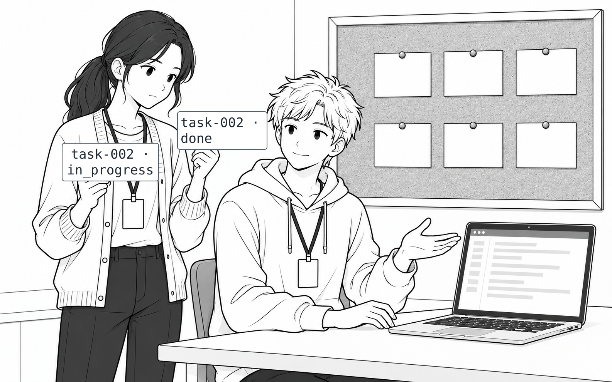
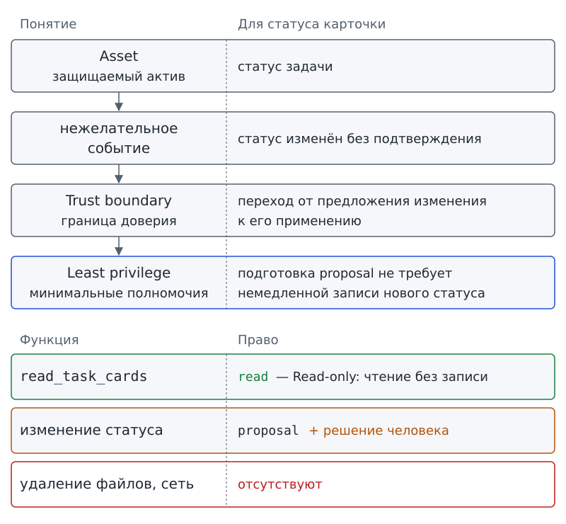
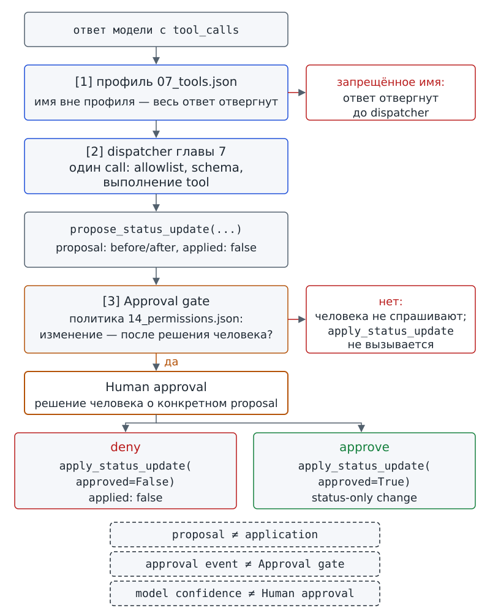

Глава 14. Permissions и участие человека¶
С чего всё началось¶
До Фестиваля науки осталось несколько дней. На доске проектного бюро задача task-002 всё ещё имеет статус in_progress: макет афиши уже согласован, но карточка ещё не переведена в done. Марк смотрит на карточку и предлагает самый короткий путь для программы-помощника «Дежурный»:
— «Дежурный» же видит карточки и умеет подготовить изменение. Если он уверен, пусть сам поставит done. Зачем каждый раз спрашивать человека?
Аня не спорит. Она кладёт рядом две карточки: на первой указан статус in_progress, на второй указан done. Потом Аня задаёт тебе два вопроса. Действительно ли для чтения карточек системе нужно право изменять их? Если изменение иногда допустимо, в какой момент программа должна остановиться, чтобы решение ещё оставалось у человека?
На первый взгляд предложение Марка избавляет человека от лишнего подтверждения, раз программа умеет подготовить изменение. Однако способность подготовить новый статус ещё не объясняет, кто вправе применить изменение. Автоматизация полезна именно тогда, когда система умеет делать больше, чем печатать текст. Но чем больше последствий может вызвать действие, тем точнее нужно различать, что система умеет и что ей разрешено.
Вопрос-Прогноз. Если «Дежурному» нужно читать карточки, готовить сводку и иногда предлагать новый статус, какие права ему действительно нужны? Должен ли он автоматически применять предложенное изменение, всегда запрещать его или останавливаться в отдельной точке до решения человека? Запиши прогноз и укажи, какой наблюдаемый факт подтвердит его.
Главный вопрос главы. Какие полномочия допустимы и где нужен человек?

Фигура 40. Пусть ставит done сам
После главы ты сможешь¶
- назвать, что в проекте нужно защищать, от каких нежелательных событий и где проходят границы между областями с разным уровнем доверия;
- связать каждое техническое право с конкретной функцией системы и убрать лишнее;
- объяснить, почему режим чтения без записи сильнее словесного запрета, но не доказывает полной изоляции компьютера;
- показать точку, где изменение состояния останавливается до решения человека;
- различить два режима участия человека в зависимости от цены ошибки и обратимости действия;
- объяснить, почему предложение изменения и его применение — разные действия;
- различить три технических гейта: профиль доступных tools, dispatcher и точку подтверждения изменения.
Урок 27. Модель угроз и минимальные полномочия¶
1. Что именно мы защищаем¶
Что может пострадать, если «Дежурный» выполнит неверное действие? Начнём с ответа на этот вопрос, а не со списка запретов. В проекте нужно защищать несколько вещей:
- Содержимое карточек задач и их статусы.
- Сохранённое состояние проекта.
- Файлы черновиков.
- Возможность выполнять определённые операции.
Если программа по ошибке изменит статус задачи, команда может решить, что работа завершена, хотя задача ещё не выполнена. Если лишнее право позволит удалить файл, ошибка причинит другой ущерб.
Asset / защищаемый актив — данные, файлы, состояние или возможности, которым может быть причинён ущерб.
Asset (защищаемый актив) не обязательно выглядит как отдельный «ценный файл». Защищать нужно и состояние карточки, и возможность изменить карточку. Даже возможность отправить данные наружу может быть активом. Понятие Asset отвечает на вопрос «что мы защищаем», но не оценивает вероятность ошибки.
У карточки task-002 одним из защищаемых активов служит статус. Для всей доски нужно сохранить корректное состояние проекта. Право менять карточки тоже требует защиты: неправильное использование права может причинить ущерб, даже если исходные данные были верны.
2. Где меняется уровень доверия¶
Проследим путь данных из карточки:
- Карточка находится в
workspace, и tool читает её. - Harness передаёт модели контекст; модель получает только переданные сведения.
- Запрос операции возвращается от модели в приложение.
На разных участках этого пути действуют разные правила. Поэтому при переходе данных или управления из одной области в другую нужно заново проверить, каким сведениям и действиям можно доверять.
Trust boundary / граница доверия — место, где данные, код или управление переходят между областями с разным уровнем доверия.
При пересечении Trust boundary (границы доверия) прежние предположения нельзя автоматически считать верными. Текст от модели не становится разрешением только потому, что приложение уже получило этот текст. Расположение файла внутри workspace также само по себе не доказывает безопасность его содержимого.
Файловая граница workspace задаёт один конкретный технический предел. Понятие Trust boundary охватывает больше переходов. Граница доверия может проходить:
- Между моделью и harness.
- Между данными и кодом.
- Между предложением изменения и механизмом, который меняет состояние.
Проверь себя на ходу. Карточка
task-002прочитана tool, а модель предлагает изменить её статус. Назови один Asset и одну Trust boundary в этой ситуации. Почему это не одно и то же?
3. От активов и границ — к модели угроз¶
Список защищаемых активов ещё не показывает, как может возникнуть ущерб. Нужно назвать нежелательные события и связать каждое событие с переходом через границу доверия. Для нашего школьного проекта достаточно простой карты конкретных действий «Дежурного»; подробная профессиональная методология безопасности здесь не требуется.
Threat model / модель угроз — описание того, что нужно защитить, какие нежелательные события возможны и где проходят границы доверия.
Threat model (модель угроз) соединяет три вопроса:
- Что может пострадать?
- Что нежелательного может произойти?
- Где система переходит в область, требующую отдельной проверки?
Модель угроз не требует предсказать все будущие атаки. Мы описываем возможные проблемы для тех действий, которые есть в учебном проекте.
Обозначение proposal будем использовать для предложения одного действия, ожидающего решения человека. Такое предложение отличается от Change proposal главы 13: там команда предлагает изменить процедуру.
Для статуса карточки описание угрозы можно записать по трём пунктам:
- Нужно защитить статус задачи.
- Нежелательное событие состоит в изменении статуса без подтверждения.
- Trust boundary проходит между подготовкой proposal и применением предложенного изменения.
Для содержимого карточек угроза связана с лишней записью. В таком случае проверять нужно переход от разрешённого чтения к попытке записи.
Threat model составляют заранее, чтобы спроектировать ограничения до сбоя. Напротив, incident report (отчёт о сбое) из главы 12 разбирает уже наблюдавшийся сбой по Trace. У документов разные задачи: модель угроз помогает предусмотреть нежелательное событие, а отчёт объясняет случившееся.
4. Не максимум прав, а ровно необходимые¶
Марк предлагает выдать права с запасом: «Дадим “Дежурному” чтение и запись. Вдруг пригодится». Но дополнительные права увеличивают возможные последствия ошибки. Если функция только читает карточку, право записи не помогает функции читать лучше.
Допустим, бюро поручило программе посчитать незавершённые задачи. При чтении программа обнаружила сомнительный статус и может отметить сомнение в черновике отчёта. Исправление исходной карточки уже выходит за пределы подсчёта: для поставленной задачи такое право не требуется.
Least privilege / минимальные полномочия — предоставление только тех прав, которые действительно требуются для конкретной задачи.
Принцип Least privilege (минимальных полномочий) требует сначала назвать функцию и лишь затем выдать нужное право:
- Для
read_task_cardsнужно чтение карточек. - Для подготовки сводки не нужно удаление файлов.
- Для подготовки proposal не нужна немедленная запись нового статуса.
Необходимые права сохраняются. Минимальные полномочия убирают лишние возможности, а не мешают системе выполнять задачу.
Проверь каждое право вопросом: «Если убрать это право, какая конкретная необходимая функция перестанет работать?» Если назвать функцию не получается, у тебя пока нет основания выдавать право «на всякий случай».
5. Режим чтения по умолчанию¶
Большинство операций «Дежурного» не должно менять исходные карточки. Программа читает данные, проверяет карточки и строит отчёт. Для такой работы подходит чтение без записи в карточки.
Read-only / только чтение — правило проекта: режим чтения используется по умолчанию, если изменение данных не является необходимым результатом текущего шага.
В режиме Read-only (только чтение) изменение исходных данных недоступно, если текущая задача изменения не требует. Одной просьбы в prompt недостаточно: запрет должен действовать в приложении и проявляться в результате попытки записи.
Read-only не доказывает полного OS-sandbox, то есть изоляции на уровне операционной системы. Отказ конкретной операции в учебной среде подтверждает конкретное ограничение, а не изоляцию всего компьютера.
В главе 3 Permissions (разрешения) определены как технически заданные права на ресурсы. Права могут разрешать чтение, запись, доступ к сети или запуск процессов. Теперь свяжем Permissions с нашей Threat model: какое право нужно каждой функции и какое право у функции должно отсутствовать.
Проверь себя на ходу. В prompt написано: «Никогда не изменяй карточки». Но приложение всё равно предоставляет операцию записи. Это Read-only? Какой наблюдаемый результат отличит словесный запрет от технического ограничения?

Фигура 41. Threat model и минимальные полномочия
6. Практика B: сначала наблюдаем технический отказ¶
Демонстрация файловой политики из главы 3 позволяет увидеть технический запрет в результате операции. Перед запуском запиши прогноз: изменится ли файл при попытке записи? Затем выполни команду.
# запуск из корня starter
python access_demo.py --access write --path tasks/task-003.json
операция: write
путь: tasks/task-003.json
результат: denied
граница: внутри workspace
причина: операция запрещена политикой демо
Программа сообщает denied до записи: политика демо запрещает операцию. Такой результат подтверждает работу конкретной границы в учебном приложении. По одной команде нельзя сделать вывод о всей безопасности компьютера. Сверяй запрет с поведением программы, а не только с текстом инструкции.
7. Файл минимальной политики¶
Для изменения статуса также нужно записанное правило, которое проверяет приложение. Минимальная учебная политика хранится в workspace/my_agent/14_permissions.json:
{
"default": "deny",
"task_cards": "read_only",
"status_update": "approval_required"
}
В примере записаны три правила:
default: denyзапрещает автоматически разрешать неизвестную возможность.task_cards: read_onlyзадаёт обычный режим чтения карточек без записи.status_update: approval_requiredдопускает переход к отдельному решению человека об изменении статуса. Само значение не разрешает автоматическую запись.
Программа допускает только три поля с ограниченным набором значений:
- Поле
defaultможет иметь только значениеdeny. - Поле
task_cardsможет иметь только значениеread_only. - Поле
status_updateможет иметь значениеapproval_requiredилиdeny.
Значения auto и allow для изменения состояния запрещены. В учебном проекте нет режима, который автоматически применяет новый статус.
В практике B подготовь политику и прогноз:
- Создай файл
workspace/my_agent/14_permissions.jsonс приведённым содержимым. - Запиши ожидаемый результат для корректной политики: программа должна принять файл.
- Запиши ожидаемый результат для политики с
default: allow: программа должна отклонить файл.
Проверку файла выполнишь в начале следующего урока. Пока сохрани прогноз, чтобы затем сравнить ожидание с результатом программы.
Результат практики B урока 27: 14_permissions.json, прогноз для корректной и слишком широкой политики и наблюдаемый отказ записи из предыдущей команды.
8. Практика A: матрица минимальных полномочий¶
Работай в паре. Вместе с напарником рассмотри семь функций системы:
- Прочитать карточки.
- Проверить карточку.
- Собрать черновик.
- Предложить новый статус.
- Применить новый статус.
- Удалить файл.
- Отправить отчёт наружу.
Для каждой функции заполни строку матрицы по образцу:
| Функция | Asset | Нужный доступ | Запрещённый доступ | Почему |
|---|---|---|---|---|
| прочитать карточки | данные карточек | чтение | запись | чтение не требует изменения |
| … | … | … | … | … |
Обоснуй каждое право конкретной функцией. Формулировка «полный доступ, чтобы точно сработало» не объясняет, какое действие требует доступа. Отдельно отметь действия, которых в учебном проекте вообще нет:
- Автоматическое удаление.
- Публикация.
- Внешняя отправка.
Результат практики A: простая Threat model и permissions-матрица, в которой отдельно указаны нужные и лишние права.
9. Мини-проверка урока 27¶
- Что нужно защищать как Asset в сценарии карточек?
- Где может проходить одна Trust boundary?
- Как Least privilege меняет список Permissions?
- Почему Read-only сильнее фразы в prompt?
- Почему Read-only не доказывает OS-sandbox?
Ответы¶
- Например, содержимое карточек, их статус, состояние проекта или сама возможность изменения.
- Например, между ответом модели и harness или между proposal и применением изменения.
- Оставляет только права, необходимые для конкретных функций, и убирает выданные «на всякий случай».
- Потому что Read-only выражается техническим правилом и наблюдаемым отказом операции записи.
- Потому что проверена конкретная политика учебного приложения, а не полная изоляция операционной системы.
10. Выходной билет урока 27¶
Запиши одну строку по шаблону:
Для функции … нужно право …; право … лишнее, потому что …
Если не можешь объяснить, почему право лишнее, вернись к матрице и сопоставь право с функцией. На следующем уроке разберём другой случай: действие иногда допустимо, но не должно происходить автоматически.
Урок 28. Человек внутри цикла¶
1. Подтверждение должно быть до изменения¶
Представь, что программа сначала меняет in_progress на done и лишь затем показывает окно «Подтвердить изменение?». Пользователь нажимает «нет», но состояние уже изменено. Вопрос после записи может быть уведомлением или просьбой оценить случившееся. Предотвратить выполненное действие такой вопрос уже не позволяет.
Human approval / подтверждение человеком — явное решение человека, необходимое до выполнения определённого изменения.
Human approval (подтверждение человеком) должно произойти до чувствительного изменения, то есть изменения с последствиями, требующими отдельного решения. Спрашивать человека на каждом шаге не нужно: проект заранее определяет, какие действия требуют подтверждения.
В нашем проекте чтение карточки не требует решения человека, а изменение статуса требует. Система может самостоятельно подготовить proposal. Но ни уверенность системы, ни убедительное объяснение не заменяют решения человека о применении предложения.
2. Техническая точка остановки¶
Что удержит подготовленное изменение, пока человек не решил, применять ли его? Одного пожелания в инструкции недостаточно. В программе нужна техническая точка остановки: данные и предложение уже подготовлены, но выполнение изменения заблокировано до нужного решения.
Approval gate — техническая точка процесса, где дальнейшее действие блокируется до подтверждения человека.
Approval gate (техническую точку подтверждения) можно сравнить с «закрытой дверью» между proposal и применением. Подготовленное предложение ещё не позволяет пройти к записи. Однако сама кнопка в интерфейсе не создаёт такой границы: Approval gate действует лишь тогда, когда код не выполняет чувствительное действие без подтверждения.
Approval gate не следует смешивать с dispatcher. Для конкретного tool call диспетчер проверяет, разрешено ли имя и соответствуют ли arguments правилам вызова. У Approval gate другая задача: удержать изменение состояния после успешно созданного proposal, но до применения предложения.
Проверь себя на ходу. Программа успешно выполнила
propose_status_updateи получила корректный proposal. Доказывает ли это, что новый статус разрешено применить? Где должен находиться Approval gate?
3. Проверяем политику: точка подтверждения открыта или закрыта¶
Режим policy проверяет файл политики. Начни с корректного workspace/my_agent/14_permissions.json, который ты подготовил на предыдущем уроке.
В комментарии к команде указана фикстура — заранее подготовленные данные для проверки. Строка с # фикстура: описывает условия напечатанного примера, а не выполняет копирование файла.
# запуск из корня starter
# фикстура: tests/fixtures/ch14/14_permissions.json -> workspace/my_agent/14_permissions.json
python permissions_demo.py policy --dir workspace/my_agent
permissions: workspace/my_agent/14_permissions.json
default: deny
task_cards: read_only
status_update: approval_required
approval_gate: open — применение только после решения человека
result: accepted
Затем выполни команду для заранее подготовленной слишком широкой политики и сравни результаты:
# запуск из корня starter
python permissions_demo.py policy --dir workspace/ch14/cases/too-broad
permissions: workspace/ch14/cases/too-broad/14_permissions.json
result: not accepted
reason: default должен быть deny
В первом выводе программа принимает политику: result: accepted. Строка approval_gate: open сопровождается условием «применение только после решения человека». Слово open здесь не означает, что изменение уже одобрено или выполнено: политика допускает путь через подтверждение, а не автоматическую запись.
Во втором выводе программа отклоняет конфигурацию из-за значения default. Ошибка политики не расширяет права; приложение не угадывает, какие права автор собирался выдать.
4. Два положения человека в процессе¶
В сценарии изменения статуса предложение уже подготовлено, а применение ждёт решения человека. Человек участвует не во всех действиях подряд, а в выбранном шаге. Такой порядок нужен, когда действие меняет общее состояние проекта и цену ошибки нельзя принять без отдельного решения.
HITL / human in the loop — режим, в котором человек встроен в рабочий цикл и подтверждает определённые действия.
HITL (human in the loop, человек внутри цикла) не означает, что человек вручную выполняет всю работу. В выбранной точке без решения человека работа не продолжается.
У сохранения разрешённого черновика порядок другой: harness может самостоятельно записать файл в drafts/. Человек затем видит результат и Trace и при необходимости вмешивается.
HOTL / human on the loop — режим, в котором система действует более самостоятельно, а человек наблюдает и может вмешаться.
В режиме HOTL (human on the loop, человек наблюдает за циклом) предварительное подтверждение каждой записи не требуется. Контроль сохраняется, но человек наблюдает за более самостоятельной работой системы и может вмешаться.
Выбирай HITL или HOTL по последствиям конкретного действия, а не по правилу «один режим всегда лучше другого». Учитывай цену ошибки и обратимость результата. Для черновика, который легко проверить, удалить или пересобрать, допустимо наблюдение после выполнения. Для изменения общего статуса команды в нашем проекте требуется решение до записи.
5. Одно предложение — одно решение¶
Допустим, человек рассмотрел proposal, проверил before, after и причину, а затем кто-то изменил карточку. Старое «да» относилось к прежним данным. Переносить решение на изменившийся объект нельзя.
Представим и другую ситуацию: человек одобрил перевод task-002 в done, а программа подготовила такое же значение статуса для task-003. Значение done совпало, но предложение касается другой задачи. Подтверждение первой карточки не разрешает изменить вторую.
Подтверждение относится к одному конкретному предложению. В учебном проекте proposal получает operation_id — идентификатор, вычисленный из содержимого предложения. Приложение проверяет, что содержимое не изменилось и что текущее состояние карточки соответствует before. Прежнее решение нельзя использовать для записи по изменившемуся предложению или поверх уже изменившихся данных.
Следующий фрагмент показывает проверки внутри существующей функции применения. Полный файл находится в school_agent/approval.py.
# фрагмент: school_agent/approval.py
if proposal.get("operation_id") != proposal_id(proposal):
raise ApprovalError("содержимое предложения изменилось")
resolve_workspace_path(target, workspace_root=workspace_root, must_exist=True)
current = load_state(target, workspace_root=workspace_root)
if current == after:
return {"applied": False, "already_applied": True, "operation_id": proposal["operation_id"]}
if current != before:
raise ApprovalError("карточка изменилась после создания предложения")
save_state(after, target, workspace_root=workspace_root)
В строках с if программа проверяет условия. Команда raise ApprovalError сообщает об ошибке и прерывает выполнение фрагмента; return возвращает результат без перехода к следующим строкам. Проверки идут в таком порядке:
- Программа заново вычисляет идентификатор и сравнивает результат с
operation_id. При несовпадении выполнение останавливается. - Программа обращается к проверке пути и читает текущее состояние в
current. - Если
currentуже совпадает сafter, программа возвращаетalready_applied: Trueи повторно ничего не записывает. - Если
currentотличается отbefore, программа сообщает, что карточка изменилась после создания предложения. - Только после этих проверок
save_stateзаписывает состояниеafter.
Сравнение относится к данным, прочитанным в current. Фрагмент не показывает проверку самого решения человека; по этому листингу можно проследить только сверку предложения и состояния перед записью.
6. Центральный артефакт: три гейта и одно изменение состояния¶
Почему для одного изменения нужны три разные проверки? Каждая проверка отвечает на свой вопрос:
- Доступна ли запрошенная операция?
- Допустим ли конкретный вызов?
- Разрешено ли применить подготовленное изменение?
Проследим проверки по схеме.
ответ модели с tool_calls
↓
[1] профиль 07_tools.json
запрещённое имя → отвергнуть весь ответ до dispatcher
↓
[2] dispatcher главы 7
один call → allowlist + schema + выполнение tool
↓
propose_status_update(...)
результат: proposal, before/after, applied: false
↓
[3] Approval gate главы 14
политика 14_permissions.json разрешает изменение после решения человека?
├── нет → человека не спрашивают, apply_status_update не вызывается
└── да → Human approval?
├── deny → apply_status_update(... approved=False) → applied: false
└── approve → apply_status_update(... approved=True) → status-only change
На первом гейте программа использует профиль 07_tools.json. Если в ответе модели есть запрос запрещённого tool, программа отвергает весь ответ до dispatcher. Даже разрешённый соседний call из этого ответа не исполняется.
На втором гейте dispatcher рассматривает каждый допустимый call отдельно: проверяет имя и arguments по schema, затем выполняет tool. При неуспешном вызове диспетчер возвращает tool error.
Третий гейт находится после подготовки proposal. Даже успешный вызов propose_status_update не даёт права применить изменение. Proposal лишь описывает возможный результат. Состояние меняет отдельная функция harness после Human approval и только при разрешающей политике главы 14.
В пяти строках ниже сопоставлены понятия, которые нельзя подменять друг другом. Слово application здесь означает применение изменения, а не ИИ-приложение из первых глав:
proposal ≠ application
model confidence ≠ Human approval
approval event ≠ Approval gate
Read-only ≠ OS-sandbox
permission ≠ trust
Последняя строка разделяет право и доверие. Разрешение выполнить действие не доказывает, что входные данные, источник или прочитанный текст заслуживают доверия.

Фигура 42. Три гейта и одно изменение состояния
7. Практика B: «Дежурный» останавливается на proposal¶
Проверь, что программа-конструктор видит файл политики. Для напечатанного результата используется указанная фикстура, подставленная только на время проверки. У тебя в workspace/my_agent должен находиться подготовленный файл 14_permissions.json.
# запуск из корня starter
# фикстура: tests/fixtures/ch14/14_permissions.json -> workspace/my_agent/14_permissions.json
python dezhurny.py status --chapter 14
dezhurny: status
config: workspace/my_agent
глава 14 | 14_permissions.json | настроено: default deny; task_cards read_only; status_update approval_required | approval gate: изменение статуса только после решения человека
Запусти status_update — авторский replay-сценарий с подготовленной последовательностью запросов. Сценарий не содержит записи поведения живой модели. Перед запуском предскажи, должен ли статус task-002 измениться уже на этом шаге.
# запуск из корня starter
# фикстура: tests/fixtures/ch14/14_permissions.json -> workspace/my_agent/14_permissions.json
python dezhurny.py run --scenario status_update
dezhurny: run
goal: не настроено (глава 1)
config: workspace/my_agent
model: replay — авторский сценарий, не запись модели
scenario: status_update
stop_policy: max_steps 5, max_retries 1 (по умолчанию, глава 2)
tools: allowlist диспетчера (по умолчанию, глава 7)
permissions: default deny | task_cards read_only | status_update approval_required
Шаг 1 | propose_status_update | needs_input
Остановка: needs_input
proposal: task-002 | in_progress -> done | operation_id: 689d4fcf4c7c4dbb
approval: required
applied: no
contract: не настроено (глава 5)
save: не настроено (глава 3)
state: не настроено (глава 10)
trace: не настроено (глава 12)
Качество модели не подтверждено этим техническим прогоном.
Строка applied: no сообщает, что предложение не применено. В авторском сценарии запрошен один tool — propose_status_update. Harness останавливает работу с терминалом needs_input, а proposal содержит operation_id. На этом шаге карточка ещё не изменена.
Лимит допускает до пяти шагов, но в напечатанном запуске выполнен только один: система остановилась перед решением человека, а не из-за исчерпания лимита. Остальные строки показывают настройки данного примера; прежде всего сверяй предложение, терминал и отсутствие применения.
8. Deny: человек отклоняет предложение¶
Следующая команда работает на временной копии workspace, поэтому поставляемая карточка не меняется. Фикстура разрешает переход к подтверждению. В этой проверке ты передаёшь решение deny через параметр --decision, а не отвечаешь на вопрос в отдельном окне.
# запуск из корня starter
# фикстура: tests/fixtures/ch14/14_permissions.json -> workspace/my_agent/14_permissions.json
python permissions_demo.py approval --decision deny
policy: workspace/my_agent/14_permissions.json | status_update approval_required
proposal: task-002 | in_progress -> done
before: status in_progress
after: status done
reason: Макет афиши согласован; Марк просит отметить задачу выполненной.
operation_id: 689d4fcf4c7c4dbb
proposal_applied: false
human_decision: deny
apply_status_update: not applied | reason: человек отклонил изменение
observed_status: in_progress
changed_fields: нет
approval_events: 2
После human_decision: deny предложение не применяется: observed_status остаётся in_progress, а поле changed_fields содержит нет.
В Trace записываются два события: запрос подтверждения и решение. Значение human в поле initiator события решения обозначает человека как инициатора; саму запись делает harness. Строка approval_events: 2 сообщает число событий, но не показывает их содержимое. События фиксируют факты и не заменяют техническую блокировку Approval gate.
9. Approve: меняется только status¶
Теперь передай approve для предложения перевести task-002 из in_progress в done. Содержание proposal совпадает с предложением из предыдущей проверки; меняется решение человека.
# запуск из корня starter
# фикстура: tests/fixtures/ch14/14_permissions.json -> workspace/my_agent/14_permissions.json
python permissions_demo.py approval --decision approve
policy: workspace/my_agent/14_permissions.json | status_update approval_required
proposal: task-002 | in_progress -> done
before: status in_progress
after: status done
reason: Макет афиши согласован; Марк просит отметить задачу выполненной.
operation_id: 689d4fcf4c7c4dbb
proposal_applied: false
human_decision: approve
apply_status_update: applied
observed_status: done
changed_fields: status
approval_events: 2
После approve программа сообщает три связанных результата:
- Строка
apply_status_update: appliedподтверждает применение. - Строка
observed_status: doneпоказывает итоговый статус. - Строка
changed_fields: statusуказывает единственное изменённое поле.
Одобрение не разрешает переписать карточку целиком. В показе применяется только предложенное и проверенное изменение статуса. Строка proposal_applied: false относится к подготовке предложения, а apply_status_update: applied относится к последующему применению; строки описывают разные этапы.
10. Политика сильнее отдельного «д໶
Достаточно ли одного approve, чтобы изменить карточку? Нет: сначала программа проверяет политику. При status_update: deny система не запрашивает подтверждение, потому что изменение запрещено. Передадим готовое approve в команду и проверим, удержит ли программа запрет.
# запуск из корня starter
python permissions_demo.py approval --dir workspace/ch14/cases/status-deny --decision approve
policy: workspace/ch14/cases/status-deny/14_permissions.json | status_update deny
proposal: task-002 | in_progress -> done
before: status in_progress
after: status done
reason: Макет афиши согласован; Марк просит отметить задачу выполненной.
operation_id: 689d4fcf4c7c4dbb
proposal_applied: false
human_decision: не запрашивалось — approval gate закрыт политикой
apply_status_update: not called | reason: политика status_update = deny
observed_status: in_progress
changed_fields: нет
approval_events: 0
При approval_required политика допускает применение после одобрения человека и необходимых проверок. При deny программа не применяет изменение и не запрашивает решение. Поэтому в запрещённом случае получаются ноль событий подтверждения вместо двух в показах с решением человека.
Спрашивать человека о действии, которое всё равно не будет выполнено, вредно: так люди привыкают нажимать «да», не читая. Программа сначала выясняет, допускает ли политика такое действие, и лишь затем обращается к человеку.
Файлы 14_permissions.json и 07_tools.json решают разные задачи. По файлу главы 7 программа определяет, может ли модель запросить операцию. По файлу главы 14 программа определяет, можно ли применить изменение состояния после отдельного решения человека.
11. Старое подтверждение не действует на изменившуюся карточку¶
Между созданием proposal и решением человека карточка может измениться. Тогда сохранённое состояние before уже не соответствует текущим данным.
Допустим, сначала задача называлась «Подготовить макет афиши», а затем название заменили на «Подготовить и напечатать афишу». Статус мог остаться in_progress, хотя работа уже описана иначе. Одного совпадения статуса недостаточно, чтобы считать карточку прежней. В следующем показе после создания предложения меняется именно название.
# запуск из корня starter
# фикстура: tests/fixtures/ch14/14_permissions.json -> workspace/my_agent/14_permissions.json
python permissions_demo.py approval --decision approve --case card-changed
policy: workspace/my_agent/14_permissions.json | status_update approval_required
proposal: task-002 | in_progress -> done
before: status in_progress
after: status done
reason: Макет афиши согласован; Марк просит отметить задачу выполненной.
operation_id: 689d4fcf4c7c4dbb
proposal_applied: false
card_changed_after_proposal: title
human_decision: approve
apply_status_update: not applied | reason: карточка изменилась после создания предложения
observed_status: in_progress
changed_fields: нет
approval_events: 2
В показе передано approve, но программа останавливает применение: после создания предложения изменилось поле title. Подтверждение относится к конкретному proposal с operation_id и к состоянию карточки, для которого предложение было подготовлено.
Строка changed_fields: нет относится к попытке применения proposal: эта попытка ничего не изменила. Строка не отменяет предшествующего изменения названия, показанного как card_changed_after_proposal: title.
Проверь себя на ходу. Почему безопаснее подтверждать конкретный proposal с
operation_id, чем хранить общий флагapproved = trueдля последующих изменений?
12. Практика A: кто принимает решение¶
Работай в группе из трёх человек. Вместе с участниками распредели роли модели, harness и человека, принимающего решение. Затем выполни действия своей роли:
- Участник в роли модели формулирует только предложение.
- Участник в роли harness показывает
before,after,reasonиoperation_id. - Участник в роли harness проверяет политику до обращения к человеку. Если изменение запрещено, подтверждение не запрашивается.
- Если политика допускает подтверждение, участник в роли человека выбирает
approveилиdeny.
Для трёх действий заполни таблицу и обоснуй каждую строку. Вариант для сравнения приведён ниже:
| Действие | Цена ошибки | Обратимость | Режим | Где gate |
|---|---|---|---|---|
сохранить черновик в drafts/ |
низкая | высокая | HOTL | человек наблюдает результат |
| изменить статус карточки | выше | ограниченная | HITL | до применения изменения |
| удалить общий файл | высокая | может быть низкой | не выполняется в проекте | действие отсутствует |
Объясни, почему выбранное участие человека соответствует последствиям действия. Не нужно назначать HITL как можно большему числу операций. В строке про черновик человек наблюдает результат, но Approval gate перед записью не установлен. Для удаления выбор HITL/HOTL не делается: в учебном проекте нет автоматического удаления, публикации и внешней отправки.
Результат практики A: схема Approval gate, обоснованный выбор HITL/HOTL для разрешённых действий и отдельная отметка недоступного действия.
13. Практика B: сравни четыре исхода¶
Собери результаты четырёх проверок в таблицу. В столбце «Карточка свежая?» укажи, совпадают ли текущие данные карточки с before:
| Политика | Решение | Карточка свежая? | Результат |
|---|---|---|---|
approval_required |
deny | да | не применено |
approval_required |
approve | да | применён только status |
deny |
не запрашивалось | да | не применено: gate закрыт политикой |
approval_required |
approve | нет | не применено: карточка изменилась |
Для каждой строки назови, какая граница остановила изменение или позволила его применить. Сопоставь один случай успешной записи с тремя случаями без записи. Затем объясни, почему четыре результата нельзя описать правилом «если человек сказал да — применить».
Результат практики B: четыре наблюдаемых исхода и объяснение роли политики, конкретного proposal и текущего состояния.
14. Обязательные проверки: должен / не должен / ошибка / граница¶
Должен¶
Политика с default: deny, task_cards: read_only и status_update: approval_required должна приниматься. При такой политике после корректного proposal и approve на свежей временной копии должен измениться только status: in_progress → done.
Не должен¶
Proposal не должен менять карточку. Команда dezhurny.py run --scenario status_update не должна автоматически вызывать применение. Функция apply_status_update не входит в tools модели. Политика status_update: deny не должна допускать изменение даже при approve.
Ошибка¶
Программа должна останавливать работу, а не расширять права «по умолчанию», если обнаружено хотя бы одно нарушение:
- Политика задаёт слишком широкие права.
- Политика содержит неизвестное поле.
- Поле содержит неизвестное значение.
- JSON повреждён.
Если карточка изменилась после создания proposal, старое подтверждение не должно разрешать запись поверх нового состояния.
Граница¶
- Программа проверяет ответ модели по профилю
07_tools.jsonдо dispatcher и может отвергнуть весь ответ из-за запрещённого имени. - Dispatcher обрабатывает конкретный разрешённый tool call: проверяет имя и arguments по schema, выполняет допустимый вызов и возвращает результат или tool error.
- Approval gate действует после подготовки proposal и до изменения состояния.
- Запись
approval eventв Trace фиксирует событие запроса или решения, но не заменяет механизм блокировки.
15. Безопасность¶
Безопасность
Least privilege означает, что право выдаётся только ради конкретной функции. Для обычной работы с карточками действует Read-only; автоматического удаления, публикации и внешней отправки в проекте нет.
Human approval должно происходить до изменения состояния. Функция
apply_status_updateнедоступна модели как tool, а подготовка proposal сама по себе карточку не меняет.Учебная политика
14_permissions.jsonне доказывает OS-sandbox и не описывает универсальную систему прав реального продукта. Проверки с этой политикой охватывают только границы, предусмотренные в starter.Наличие Approval gate также не доказывает, что входные данные заслуживают доверия. Разрешение на действие не заменяет проверку доверия к источнику.
Safety-вопрос¶
Если модель ошибётся именно в тот момент, когда просит изменить состояние проекта, какая техническая граница ограничит последствия до изменения? Как ты проверишь работу этой границы по наблюдаемому результату, а не по обещанию в prompt?
В ответе покажи всю последовательность, а не только фразу «спросить человека»:
- Система готовит proposal без записи в карточку.
- Программа проверяет политику.
- Approval gate блокирует применение до нужного решения.
- Человек принимает решение о конкретном предложении с
operation_id. - Программа применяет одобренное изменение только при совпадении текущего состояния с ожидаемым.
16. Три разных гейта: архитектурное ревью¶
Обменяйся схемой с соседней группой. Проверь, различаются ли на полученной схеме три гейта.
Первый. Найди профиль 07_tools.json. Если профиль показан как «проверка аргументов одной функции», предложи исправление: программа проверяет доступность tools для ответа модели до dispatcher.
Второй. Найди dispatcher. Диспетчер не должен быть изображён как Human approval: диспетчер обрабатывает конкретный tool call и проверяет технический контракт вызова.
Третий. Найди Approval gate. Если точка подтверждения стоит после apply_status_update, предложи перенести точку перед применением: позднее подтверждение не удерживает изменение.
Завершай ревью, когда другая группа сможет последовательно пройти по схеме и назвать отдельный вопрос для каждого гейта:
- Может ли модель запросить эту операцию?
- Соответствует ли конкретный вызов техническому контракту?
- Можно ли применить это чувствительное изменение сейчас?
17. Мини-проверка урока 28¶
- Что такое Human approval?
- Где должен находиться Approval gate?
- Почему вопрос после уже выполненного изменения не считается Human approval?
- Чем HITL отличается от HOTL?
- Почему
propose_status_updateможет быть tool, аapply_status_updateне отдаётся модели? - Почему подтверждение привязано к
operation_id, а не к слову «да»? - Чем
07_tools.json, dispatcher и Approval gate отличаются друг от друга?
Ответы¶
- Явное решение человека, необходимое до выполнения определённого изменения.
- Между proposal и применением чувствительного изменения.
- Потому что решение уже не может предотвратить действие; это уведомление о случившемся.
- В HITL человек встроен в выбранный шаг и без его решения продолжения нет; в HOTL система действует более самостоятельно, а человек наблюдает и может вмешаться.
- Первый только готовит proposal без записи; второй реально меняет состояние и поэтому выполняется вне model tools после отдельного решения.
- Потому что решение относится к конкретному содержимому proposal и конкретному состоянию карточки; изменившееся предложение или карточка требуют нового решения.
- Профиль ограничивает доступные имена tools до dispatcher; dispatcher проверяет один вызов; Approval gate блокирует последующее чувствительное изменение до решения человека.
18. Выходной билет урока 28¶
Нарисуй четыре блока:
proposal → gate → approve / deny → apply / no apply
Подпиши, кто принимает решение, и рядом допиши:
proposal ≠ application
approval event ≠ Approval gate
Если функция apply_status_update оказалась внутри блока модели, исправь схему: применение выполняет harness, а не tool, доступный модели.
Зачем это тебе¶
-
В общей таблице результатов лабораторной работы программа может сама посчитать среднее и подготовить предложение исправить явно ошибочную строку. Но изменение общего файла затрагивает всю группу. Поэтому вычисление нужно отделить от права применить правку: сначала показать
before/after, затем получить решение человека. -
Для командной презентации скрипт может автоматически подготовить черновик слайдов в отдельной папке. Черновик легко пересобрать и проверить, поэтому такая работа подходит под HOTL: система действует сама в ограниченной области, а человек наблюдает результат. Публикация презентации наружу имеет другие последствия. В нашем учебном проекте такой автоматической операции вообще нет.
-
На электронной доске задач класса программа-помощник может читать карточки и предлагать отметить задачу как, вероятно, завершённую. Однако отметка
doneвлияет на работу других участников. Проект требует отдельного решения об изменении общего состояния, поэтому использует HITL. Основанием служит принятое правило, а не представление, будто человек «умнее алгоритма в любой ситуации».
Шаг сквозного проекта¶
Файл workspace/my_agent/14_permissions.json фиксирует три решения для «Дежурного»:
- Неизвестные возможности запрещены по умолчанию.
- Карточки обычно доступны только для чтения.
- Статус можно изменить только через отдельное подтверждение конкретного proposal, если политика допускает такое изменение.
Вместе с командой покажи работу политики:
- Выполни
python dezhurny.py status --chapter 14и объясни строку главы 14. - Выполни
python dezhurny.py run --scenario status_updateи покажи остановкуneeds_input, подготовленныйproposal, требованиеapproval: requiredи отсутствие примененияapplied: no. - Отдельно сравни результаты четырёх показов: решения
denyиapproveпри разрешающей политике, запретstatus_update: denyи отказ после изменения карточки.
Практическая проверочная работа 3 требует продемонстрировать работу политики. На защите представь четыре результата:
- Threat model.
- Permissions-матрицу.
- Файл
14_permissions.json. - Демонстрацию сценариев подтверждения.
Вместо утверждения «у нас безопасно» покажи, какое право нужно каждой функции и какой наблюдаемый результат подтверждает работу границы.
Возвращаемся к сцене¶
В начале главы Марк предложил: «Если “Дежурный” уверен, пусть сам поставит done». Для одной отметки оказались нужны три разных основания:
- Система умеет подготовить предложение.
- Техническая политика допускает изменение.
- Человек принимает решение о конкретном предложении.
Уверенность системы не заменяет ни право на действие, ни решение человека.
Для чтения карточек «Дежурному» не нужно право записи. Функция propose_status_update возвращает предложение с before, after, причиной и operation_id, но не меняет карточку. Применение выполняется за Approval gate. Для записи нужны разрешающая политика, одобрение человека и совпадение текущих данных с состоянием, для которого создан proposal.
Ответ на вопрос-прогноз теперь можно проверить, а не просто обсудить. При approval_required + approve меняется только status; при deny, при политике status_update: deny или при изменившейся карточке применение останавливается. Значит, допустимые полномочия определяются необходимой функцией и технической политикой, а человек удерживает выбранные чувствительные изменения до их выполнения, а не после.
Проверь себя¶
- Что такое Asset и почему возможность изменить статус тоже может быть Asset?
- Чем Trust boundary отличается от файловой границы
workspace? - Из каких трёх вопросов складывается простая Threat model?
- Что требует Least privilege?
- Почему Read-only не равен словесному запрету и не равен OS-sandbox?
- Что делает Human approval настоящим подтверждением, а не уведомлением?
- Чем Approval gate отличается от dispatcher?
- В чём разница между HITL и HOTL на примерах нашего проекта?
- Разбери ситуацию: политика
approval_required, человек нажалapprove, но после создания proposal карточка изменилась. Что должна сделать система и почему?
Ответы¶
- Asset — данные, файлы, состояние или возможности, которым может быть причинён ущерб. Возможность изменения статуса важна сама по себе, потому что её неправильное использование меняет состояние проекта.
workspace— конкретная файловая граница; Trust boundary — любой переход данных, кода или управления между областями разного доверия.- Что защищаем; какое нежелательное событие возможно; где проходит граница доверия.
- Выдать только те права, которые действительно нужны конкретной функции.
- Read-only наблюдается как технический запрет записи, но проверяет только конкретную политику учебного приложения, а не полную изоляцию ОС.
- Решение человека происходит до изменения и относится к конкретному proposal.
- Dispatcher проверяет и выполняет конкретный tool call; Approval gate блокирует последующее чувствительное действие до Human approval.
- HITL: изменение статуса ждёт решения человека. HOTL: разрешённый черновик в
drafts/может быть создан автоматически, а человек наблюдает и может вмешаться. - Не применять изменение. Текущее состояние уже не совпадает с
before, поэтому прежнее решение относилось к другой версии карточки и требуется новое предложение.
Словарь главы¶
| Термин | Рабочая формулировка |
|---|---|
| Asset / защищаемый актив | данные, файлы, состояние или возможности, которым может быть причинён ущерб |
| Trust boundary / граница доверия | место, где данные, код или управление переходят между областями с разным уровнем доверия |
| Threat model / модель угроз | описание того, что нужно защитить, какие нежелательные события возможны и где проходят границы доверия |
| Least privilege / минимальные полномочия | предоставление только тех прав, которые действительно требуются для конкретной задачи |
| Read-only / только чтение | правило проекта: режим чтения используется по умолчанию, если изменение данных не является необходимым результатом текущего шага |
| Human approval / подтверждение человеком | явное решение человека, необходимое до выполнения определённого изменения |
| Approval gate | техническая точка процесса, где дальнейшее действие блокируется до подтверждения человека |
| HITL / human in the loop | режим, в котором человек встроен в рабочий цикл и подтверждает определённые действия |
| HOTL / human on the loop | режим, в котором система действует более самостоятельно, а человек наблюдает и может вмешаться |
Мост к главе 15¶
Теперь ограничения «Дежурного» задаются не только формой tools и проверками dispatcher. Команда связала права с необходимыми функциями и определила, какие возможности запрещены по умолчанию. Для выбранного чувствительного изменения программа ждёт Human approval.
Достаточно ли разрешения прочитать файл, чтобы доверять всему прочитанному? Нет: Permissions ограничивают действия, но не определяют смысл содержимого. Материал, переданный системе как данные, сам может содержать текст, похожий на команду. Нужно различить, чему в таком материале можно доверять и что следует считать только данными.
Следующий вопрос. Что делать с данными и кодом, которым нельзя автоматически доверять?
Ответ ты найдёшь в главе 15, «Prompt injection и недоверенные подключения».